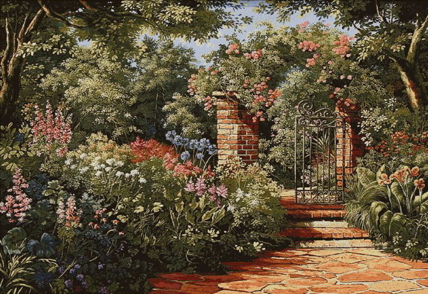

𝔗𝔬 𝔱𝔥𝔢 𝔙𝔦𝔯𝔤𝔦𝔫𝔰, 𝔱𝔬 𝔐𝔞𝔨𝔢 𝔐𝔲𝔠𝔥 𝔬𝔣 𝔗𝔦𝔪𝔢
𝔊𝔞𝔱𝔥𝔢𝔯 𝔶𝔢 𝔯𝔬𝔰𝔢-𝔟𝔲𝔡𝔰 𝔴𝔥𝔦𝔩𝔢 𝔶𝔢 𝔪𝔞𝔶,
𝔒𝔩𝔡 𝔗𝔦𝔪𝔢 𝔦𝔰 𝔰𝔱𝔦𝔩𝔩 𝔞-𝔣𝔩𝔶𝔦𝔫𝔤;
𝔄𝔫𝔡 𝔱𝔥𝔦𝔰 𝔰𝔞𝔪𝔢 𝔣𝔩𝔬𝔴𝔢𝔯 𝔱𝔥𝔞𝔱 𝔰𝔪𝔦𝔩𝔢𝔰 𝔱𝔬𝔡𝔞𝔶
𝔗𝔬𝔪𝔬𝔯𝔯𝔬𝔴 𝔴𝔦𝔩𝔩 𝔟𝔢 𝔡𝔶𝔦𝔫𝔤.
𝔗𝔥𝔢 𝔤𝔩𝔬𝔯𝔦𝔬𝔲𝔰 𝔩𝔞𝔪𝔭 𝔬𝔣 𝔥𝔢𝔞𝔳𝔢𝔫, 𝔱𝔥𝔢 𝔰𝔲𝔫,
𝔗𝔥𝔢 𝔥𝔦𝔤𝔥𝔢𝔯 𝔥𝔢'𝔰 𝔞-𝔤𝔢𝔱𝔱𝔦𝔫𝔤,
𝔗𝔥𝔢 𝔰𝔬𝔬𝔫𝔢𝔯 𝔴𝔦𝔩𝔩 𝔥𝔦𝔰 𝔯𝔞𝔠𝔢 𝔟𝔢 𝔯𝔲𝔫,
𝔄𝔫𝔡 𝔫𝔢𝔞𝔯𝔢𝔯 𝔥𝔢'𝔰 𝔱𝔬 𝔰𝔢𝔱𝔱𝔦𝔫𝔤.
𝔗𝔥𝔞𝔱 𝔞𝔤𝔢 𝔦𝔰 𝔟𝔢𝔰𝔱 𝔴𝔥𝔦𝔠𝔥 𝔦𝔰 𝔱𝔥𝔢 𝔣𝔦𝔯𝔰𝔱,
𝔚𝔥𝔢𝔫 𝔶𝔬𝔲𝔱𝔥 𝔞𝔫𝔡 𝔟𝔩𝔬𝔬𝔡 𝔞𝔯𝔢 𝔴𝔞𝔯𝔪𝔢𝔯;
𝔅𝔲𝔱 𝔟𝔢𝔦𝔫𝔤 𝔰𝔭𝔢𝔫𝔱, 𝔱𝔥𝔢 𝔴𝔬𝔯𝔰𝔢, 𝔞𝔫𝔡 𝔴𝔬𝔯𝔰𝔱
𝔗𝔦𝔪𝔢𝔰 𝔰𝔱𝔦𝔩𝔩 𝔰𝔲𝔠𝔠𝔢𝔢𝔡 𝔱𝔥𝔢 𝔣𝔬𝔯𝔪𝔢𝔯.
𝔗𝔥𝔢𝔫 𝔟𝔢 𝔫𝔬𝔱 𝔠𝔬𝔶, 𝔟𝔲𝔱 𝔲𝔰𝔢 𝔶𝔬𝔲𝔯 𝔱𝔦𝔪𝔢,
𝔄𝔫𝔡 𝔴𝔥𝔦𝔩𝔢 𝔶𝔢 𝔪𝔞𝔶, 𝔤𝔬 𝔪𝔞𝔯𝔯𝔶;
𝔉𝔬𝔯 𝔥𝔞𝔳𝔦𝔫𝔤 𝔩𝔬𝔰𝔱 𝔟𝔲𝔱 𝔬𝔫𝔠𝔢 𝔶𝔬𝔲𝔯 𝔭𝔯𝔦𝔪𝔢,
𝔜𝔬𝔲 𝔪𝔞𝔶 𝔣𝔬𝔯𝔢𝔳𝔢𝔯 𝔱𝔞𝔯𝔯𝔶.